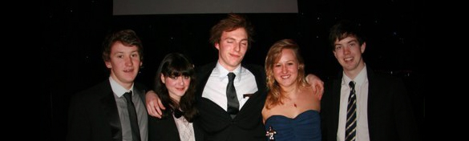
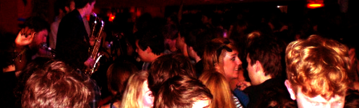
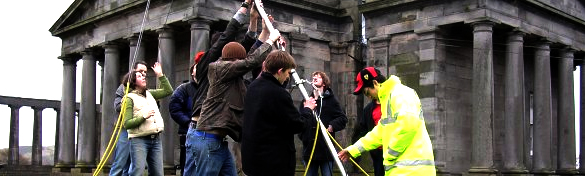

About
Freshair.org.uk is an independent, student-run radio station for Edinburgh, committed to providing the soundtrack to the time of your life in Edinburgh. Now in its 20th year, and with a string of awards to its name, Freshair.org.uk continues to be a highly successful and respected station. With a membership of over 300 from all of Edinburgh's universities, as well as many non-students, Freshair.org.uk is a highly diverse, active and involved society with a vast amount to offer.
Freshair.org.uk broadcasts 24/7 from our impressively equipped studio, above the Pleasance courtyard. With over eighty shows a semester, Freshair.org.uk's programming is as diverse as its membeship - shows range from specialist music shows to cultural review show and much, much more. Whatever you are into, we will strive to work with you to get it on the air! We broadcast online through our website and iTunes. This format draws in huge audiences from all over the world, with monthly listening figures consistentaly above 10,000 and often peaking at 20,000+.
2011/2012 will be Freshair.org.uk/s 20th year and we have some very special plans in place. This is the most exciting time to get involved in the station as we aim to have our biggest year ever, following on from our award winning success at the EUSA Society Oscars and Scottish Radio Station of the year for 2011. There's plenty for you to get involved in andhelp us celebrate Freshair.org.uk's birthday in style!
We Make Radio
Regardless of your expeirence, we'd love to help you present your own radio show. We can help you prepare and produce your show and make sure you show is exactly how you want it. If you're not sure what you'd like your show to be why not join one of our amazing HUB shows, where several people all contribute to the same show? This is a great way to practice your radio skills and work with other creative, enthusiastic radio folk. we are also well known for our socials, which allow everyone to get to know each other and make the station so famously fun and coherent.
As a society, Freshair.org.uk is committed to giving as many opportunitiies to each member of the station as possible, whether this is through technical studio training, club DJ training, production workshops or our guest speakers who come from BBC Radio 1, Forth One and Capital FM and more. This commitment has led past freshair.org.uk members to enter employment with BBC TV, BBC Radio 1, BBC Radio 6Music, Galaxy, XFM and elsewhere. As an independant radio station, we have to raise all of our own funds; as a result, advertising and fundraising events are of key importance to the station. The events we put on vary from club nights to sell out gigs, from charity auctions to pub quizzes and even striping to our underwear and signing carols at Christmas in Princes Street - No, really! Our club nights, such as the famous 50s/60s night Twist & Shout, are enoumously popular and we are proud to showcase our strong line-up of DJs in the memership.
We put on many gigs throughout the year and many artists come into our studios for sessions. Recently, we've put on Metronomy, Frightened Rabbit, Broken Records, Two Door Cinema Club and many, many more. We've also interviewed Tinie Tempah and Ewan McGregor live on air and had Chiddy Bang, Phil Jupitus, Wild Beasts and so many more live on air in our studio. And last year we put on the WORLD's FIRST bicycle-powered radio show live from Bristo Square. We're a massively dynamic station and there's a whole host of ways you can get involved.
What You Can Do
- Presenting - No matter what your experience, we can train ANYONE to be an awesome presenter.
- Production - Sound editing, controlling studio gear, show organisation makeing the station sound sexy!
- DJing - We can train you to play at our mega cllub nights and events around Edinburgh.
- Music Team - Interview bands, pick up free albums and gig tickets to review, help choose the station's playlist.
- Arts Team - Review local theatre, cinema, art and all things culture through ffree press tickets.
- News Team - Procide comment on the national and student news storeies and take part in in-depth interviews or even investigative journalism.
- Fundraising - Run our epic fundraisers from club nights to pub quizzes to our infamous nearly-naked carol singing on Princes Street.
- Events Team - Help organise club nights, gigs, our media ball and more, gaining unparalled invaluable experience in the field.
- Technical/Web - Help build and maintain our wide range of studio, and DJ equipment and run our gorgeous new website (when it's finally ready...).
Get Involved
Come and meet us in the potterow Dome every day from 1-4pm and try your skills as a DJ live on air. We'll also have loads of games to play and prizes to give away during our "Live from the Dome" shows all week.
We'll also be at the societies fair giving STUDIO TOURS every half hour so come say hi - we'd love to meet you! We'll be the stall full of gorgeous people and loads of cool kit - we'll be broadcasting live from the fair, too. You can even have a go on our decks if you like.
To join up come along to one of our weekly meetings every Tuesday at Room at 34 Potterow (formerly Koko) at 7.30pm (starting 20th September).
If you have any questions or want to find out more, or even just fancy some brilliant chat then contact our station manager JP. Contact
If you want to get in contact with any of our wonderful team:
- Manager manager@freshair.org.uk
- Assistant Manager assistantmanager@freshair.org.uk
- Secretary secretary@freshair.org.uk
- Head of Music music@freshair.org.uk
- Head of Arts arts@freshair.org.uk
- Head of News news@freshair.org.uk
- Head of Events events@freshair.org.uk
- Development and Training development@freshair.org.uk
- Programming programming@freshair.org.uk
- Advertising and Fundraising Advertising@freshair.org.uk | Fundraising@freshair.org.uk
- Head of On Air onair@freshair.org.uk
- Head of Off Air offair@freshair.org.uk
- Head of Marketing marketing@freshair.org.uk
- Head of Design design@freshair.org.uk
- Head of Technical technical@freshair.org.uk
- Head of Webmaster webmaster@freshair.org.uk
Returning Members
If you are a returning member, we are holding an advanced membership sign up day on Tuesday September 13th, 7.30pm in our new venue Room 34 at Potterow (formally Koko).
If you are itching to get doing some radio, email Finlay to get involved with the Potterow broadcasts, and be sure to e-mail JP to help out at the Freshers' Stall and other things like that. Aside from this - get ready to kick some behind.
What's With The Website
As part of our 20th Year celebrations the website is being updated to provide a whole new host of features for our members. This unfortunately has had to come at the expense of a brief period of downtime, while we move things about.